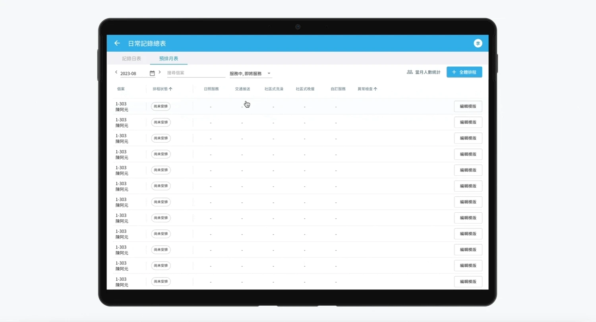
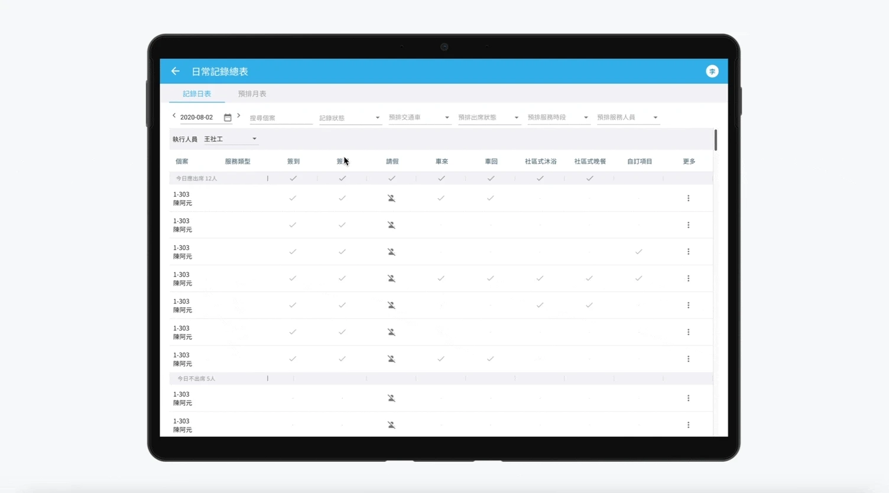
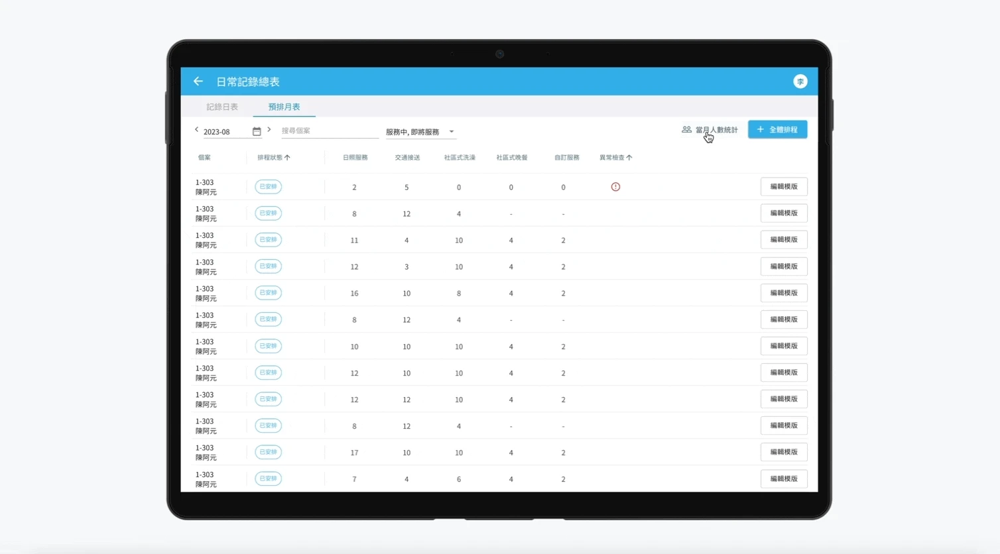

Redesigning a high-frequency healthcare admin module so clinic staff spend less time on paperwork — and more time on care.

Shifted a daily-use healthcare module from reactive record-keeping to proactive planning — reducing scheduling overhead for 30+ institutions across Taiwan.
The most-used feature in the system was also the most painful. The fix wasn't a UI refresh — it was rethinking the entire workflow from scratch.
A product used every single day — and slowly breaking under its own weight
The Daily Record Table is the most frequently used module in JuboDC, a B2B care management platform serving 30+ daycare institutions across Taiwan. Managers and caregivers rely on it daily to log care details, track attendance, and prepare documentation for government reimbursement reviews.
As institutions grew and government audits became increasingly stringent, the system that was "good enough" stopped being enough. Staff were spending longer hours on scheduling and manual data entry — time that should have gone to patients. Meanwhile, competitors were already offering visual scheduling tools, and institutions switching to Jubo were arriving with higher expectations.
The Daily Record Table needed more than a patch. It needed a rethink.

Two pressures, one broken workflow
"Verification week is the most stressful week of the month. We're just manually fixing things the whole time."
— Institution Manager, customer interview
Two forces were colliding at once. From users: stricter government audits meant more detailed records and tighter staffing ratios — but the system gave them no way to plan proactively. From the business: competitors already offered visual scheduling features, and potential customers were hesitating to switch.
At the core of both problems was a single structural gap: the system was designed to record what happened. But staff needed to plan what would happen — and have records flow from that plan.
No monthly view — no way to see or manage an entire month of case schedules at a glance.
Records built from scratch — every daily entry had to be filled manually, even when it matched the pre-arranged plan exactly.
Staffing ratios invisible until too late — managers couldn't check compliance with the government's 1:8 care ratio until verification week.
Exceptions required full rework — a single leave or schedule change meant manual corrections throughout multiple screens.
Understanding the system before redesigning it
Before jumping to solutions, I first needed to understand the full shape of the problem. The JuboDC system has nearly 50 interconnected modules — designing one part without understanding the whole would simply move the pain somewhere else.
-
1
Service flow mapping Together with designers across product lines, I audited the full daily care workflow: every role, task, and time point that touched the record module. This surfaced the logical connections between pre-scheduling and record-keeping that weren't visible from user complaints alone.
-
2
Qualitative feedback analysis I reviewed accumulated customer service records, categorised the themes, and worked with the PM to prioritise by business impact and user frequency. The majority of screened feedback clustered around two areas: pre-scheduling gaps and operational friction.
-
3
Internal interviews Staff from the business and implementation teams were closer to users than anyone. They surfaced the real-world scheduling pressures: government audits demanding more granular data, write-off weeks dreaded by every institution, and schedule changes happening constantly at the last minute.
-
4
External interviews with key customers Direct conversations with clinic managers revealed workarounds they'd built themselves — spreadsheets, sticky notes, separate tracking systems — all compensating for things JuboDC didn't do.
-
5
Prototype testing (3 rounds) Once we had an initial concept, we tested with the internal customer service team and key customers. This is where our assumptions were challenged most directly.
Prototype testing revealed that the top two feature requests were a monthly case schedule view and a manpower ratio checker — both of which the system had no equivalent for. Our initial prioritisation was wrong. The testing changed the release scope.
Old model: record after the fact, one entry at a time, starting from zero.
New model: plan the month → records default to the plan → staff confirm or adjust by exception.
This one shift — from reactive to proactive — became the design principle behind every feature that followed.
Three systems that put the care team back in control
Each solution maps directly to a breakdown found in research — the goal wasn't to add features, but to eliminate the moments where staff had to hold complexity in their heads or re-enter information they already had.
A master-table schedule built around how institutions actually work: daily services, transportation, community services, and custom projects are presented together, quantitatively. Abnormal items surface directly on the main view so managers can spot and resolve exceptions without scanning individual records.
One-click scheduling eliminates the monthly rebuild. Staff can copy last month's schedule — or apply a saved template — and paste it into the new month in seconds. Recurring arrangements are assumed; exceptions are the only thing that needs attention.

Check-ins, check-outs, vehicle arrivals and returns now default to the pre-arranged plan. Staff confirm — or adjust — rather than entering data from zero. Batch check-in and check-out based on the day's schedule replaces individual manual entry, reducing the time clients spend logged outside of care. If something doesn't match, a single click opens the record for correction.

Government regulations require institutions to maintain a minimum 1:8 staff-to-case ratio. When case numbers shift — a sudden addition, a last-minute leave — compliance risk appears silently. The headcount view calculates ratios in real time during scheduling, so managers can catch and resolve problems before the day of care, not during the most stressful week of the month.

What I carry forward from this project
-
1
Rethinking the workflow matters more than redesigning the screen. The most impactful decision in this project wasn't a UI choice — it was changing the mental model from "record after" to "plan first, confirm by exception." That only became visible after mapping the full service flow, not just the interface.
-
2
Early, systematic research prevents late, expensive rework. Mapping the service flow before any interviews meant I asked sharper questions and caught logical gaps before they became design decisions. It also helped engineers and PMs align quickly — because we all shared the same picture of the system.
-
3
Prototype testing will challenge your assumptions. Let it. We entered testing with a confident prioritisation. The results moved manpower ratio tracking much higher than we expected. Being willing to reorder our scope based on that changed what we shipped first — and made the release more immediately useful.
-
4
Internal stakeholders are an underused research resource. The business and customer service teams had specific, detailed knowledge about user pain that no interview guide would have uncovered. Building those relationships early gave me a continuous feedback loop throughout the project, not just at formal research stages.